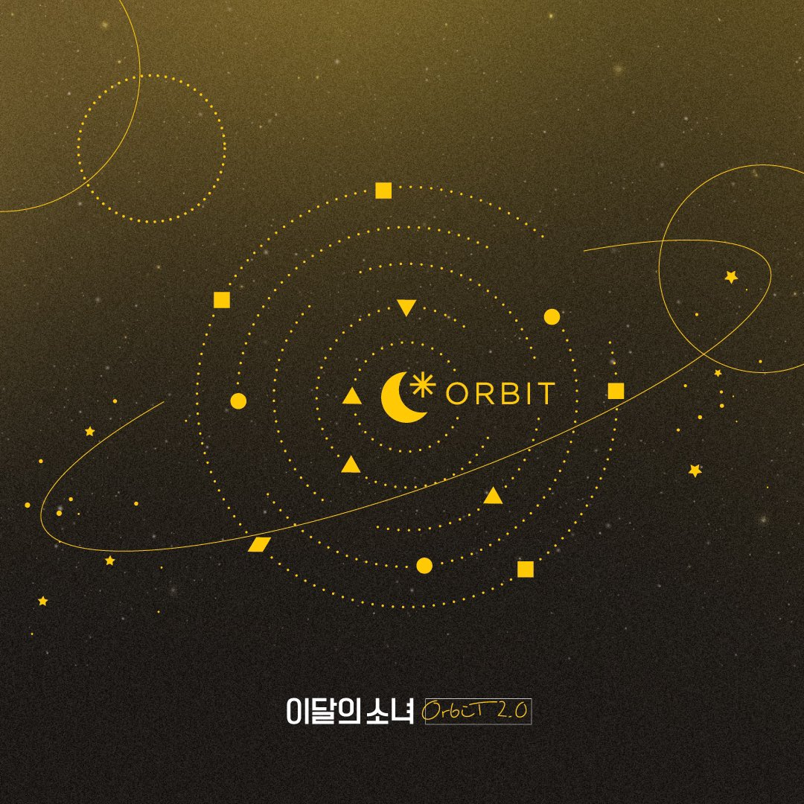
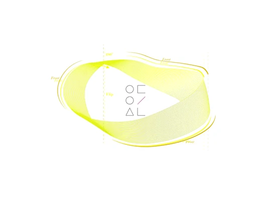
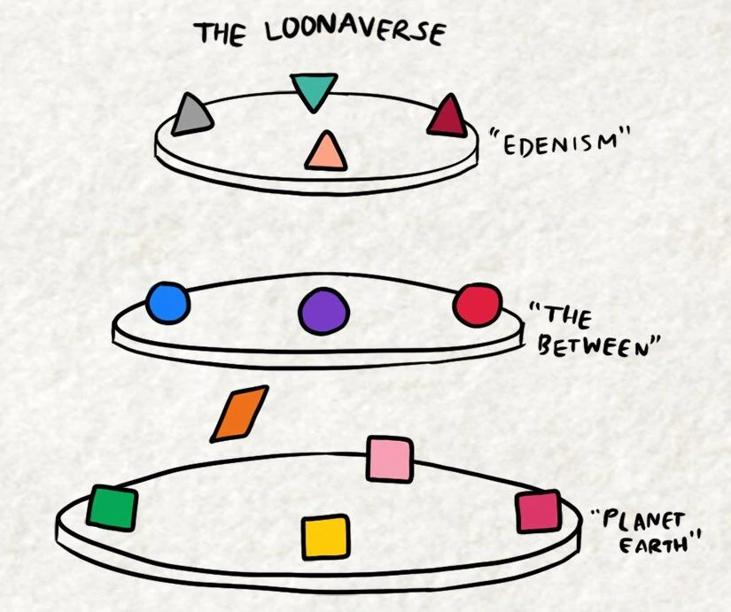

| Home | História | Loonaverso | Integrantes | Discografia |
Antes de falarmos diretamente do Loonaverso ou melhor, o que "O que é Loonaverso", é importante ressaltar que os fãs do Loona, chamados Orbits, tem um papel fundamental no Loonaverso, afinal são eles os responsáveis por criar as diversas teorias que rondam todo esse universo do Loona, é como se eles fossem a peça chave para toda uma engrenagem funcionar então, para não deixá-los de fora, eu decidi explicar aqui o porque o fandom (fãs) chamam-se Orbits.
Orbit é oficial do fandom do Loona e ele foi estabilizado dia 10 de julho de 2018. De acordo com um comunicado da BlockBerry Creative, Orbit significa que o fandom está criando um caminho de órbita onde o Loona pode crescer, como se os fãs "orbitassem" em torno do seu ídolo. Além disso, se formos analisar a palvra em coreano, veremos que a primeira vogal, 오, é lida como "oh" e a segunda, 빛, como "bit", que traduzindo para o inglês significa "light", e juntos formam "Oh!Light" onde "oh" é a exclamaçaõ e a luz representando o que o Loona é para os fãs.
Bem, é um pouco complicado falar sobre o que é Loonaverso pois não existe uma definição exata e concreta do que seja, tanto que existem diversas versões de teorias criadas por orbits para tentar explicar o que de fato é. Mas o que pode ser tido como uma "verdade" é que o Loonaverso é o universo fictício onde as inetegrantes do Loona vivem. Ele é retratado através de suas músicas, videoclipes e teasers, muitos Orbits começaram a teorizar o que os vídeos envolvem e como a história de cada garota se intrelaça uma a outra. Sua existência foi oficialmente divulgada no dia 26 de abril de 2017, mas apenas recebeu esse nome em 22 de maio do mesmo ano.
Outra infromação que é considerada como uma verdade absoluta dentro do Loonaverso é que ele existe dentro de uma fita möbius. Mas o que é uma fita möbius? Basicamente é uma superfície não orientável ou seja, uma faixa de moebius, ou möbius, não possuí o lado de dentro ou de fora, so tem um lado e uma única borda. Foi proposta pelo matemático alemão August Ferdinand Moebius (por isso o nome) em 1858. Se fosse possível andar em uma fita assim seria preciso percorrer duas vezes o tamanho da fita aberta para voltar ao local de partida. Se percorressemos apenas uma vez o tamanho normal da fita chegaríamos a um local parecido com o que saímos, mas invertido. E é exatamente isso o que ocorre no Loonaverso. Temos as integrantes do Loona 1/3 que residem em um universo paralelo como o nosso, também chamado Terra e retratam meninas realistas e usuais, que podem ser encontradas nas ruas ou nas escolas. Em contrapartida as meninas do ODD EYE CIRCLE residem em uma realidade entre a Terra e o espaço, também conhecida como a Terra do Meio e, diferentemente das primeiras garotas, que apresentam-se como pessoas sem nenhum tipo de dom especial, as residentes da Terra do Meio possuem habilidades/poderes fantasiosos e sobre-humanos, equanto sugerem que o amor deve ser controlado ao invés de ser passivo. E por último, as garotas do YYXY, elas habitam um local que é dito como "utópico", uma utopia, conhecida como Éden, que fica além da Terra e da Terra do Meio. Mas isso logo muda, pois elas decidem sair do Éden para se descobreirem e poderem viver uma vida onde não sejam forçadas a serem perfeitas, como é predito para as residentes do Éden. E é aqui onde o Loonaverso começa a tomar forma e a se expandir.
|  |  |
Se você se interessou por todo esse universo que o Loona construiu e gostaria de entender/conhecer mais sobre ele, abaixo seguem linkados alguns vídeos de teorias feitos por Orbits para tentar explicá-lo de uma forma mais convencional e explicitado. Espero que gostem!!!